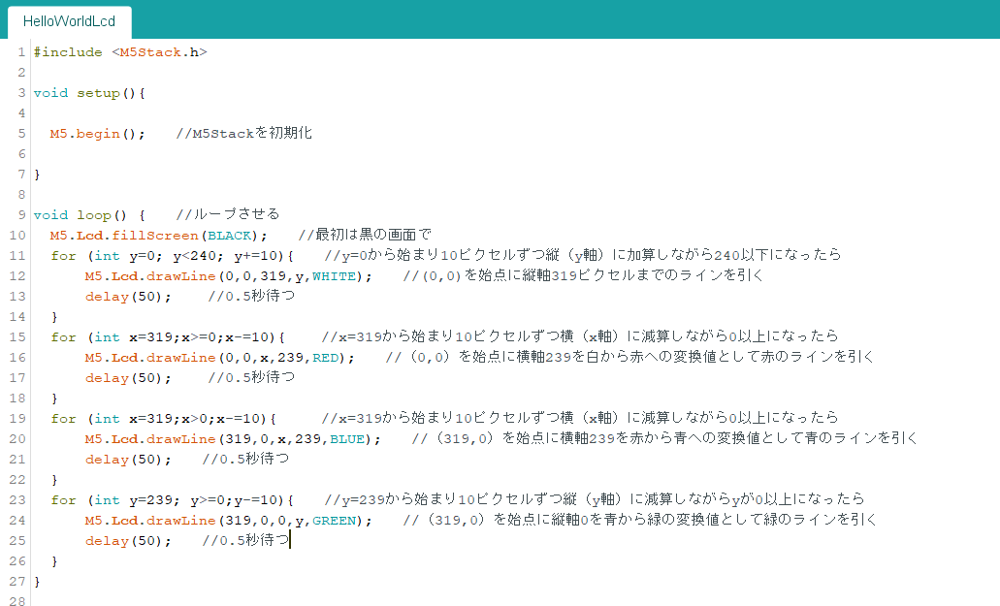
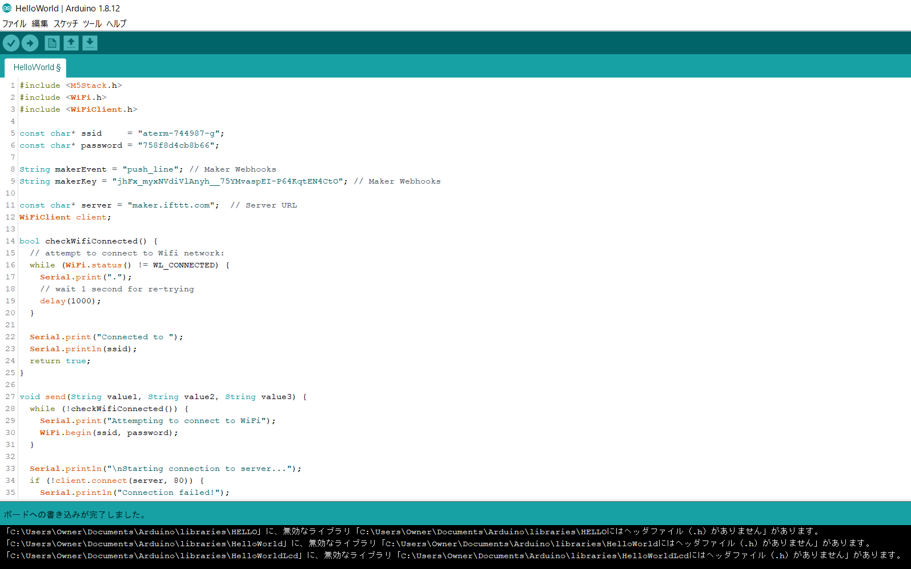

2週間の進捗状況
まだ成果は出せてないけど、チャレンジしたことを書いてみる
C言語から学ぶ
先々週？のゼミでとりあえずC言語から学んでいきます！と宣言したが止められた...。理由は単純。複雑すぎて理解して使いこなすまでにめちゃめちゃ時間がかかるから。ここで発表して先生に止めてもらって良かったなとわかった。
しかし本を購入した後だったので個人的には本どうしよう的な。（笑）とりあえずスキマ時間に読んでみることにした。先生の行った通りやっぱり短時間で理解できるような言語ではないと知った。。。とは思いつつなんか面白くて400ページぐらい読んでました。まあ、何にも学びが得られなかった分けじゃ無かったので買ったことは後悔してません！！（笑）
.png)
M5Stack：そんなこんなでとりあえずM5Stackを触ってみることに...。
本に書いてあったコードを入れてみました。M5Stackを入手して初めて見たときは何が書いてあるのかわかりませんでしたが、自分なりになんか理解できました！（笑）たぶんC言語の本を読んでおいたから抵抗なく理解できたのかな？といい風に解釈しました（ポジティブに～♪）

M5StackとLineをつなげてみる
MeshでLineに通知する仕組みができたので、M5Stackを使って自分でも挑戦してみました！★検索したら何個かコードの例が載っていたのでそれを書き写すことに。

コンパイル時は問題無かったけど書き込みしたらファイルがないって出てくる～、あるはずなんだけど（？）なんでだろ、ライブラリの問題かしら...次のゼミで先生に聞いてみよ～♪
ArduinoでIoT
せっかくArduinoもあるのでLineにつなげるのは問題解決するまでいったん置いといて・・・。とりあえず今の段階の自分でもなにかしらのIoT作れないかと調べたら「インターホンが鳴ったときに通知してくれるIoT」を作った人がいたのでそれを参考にやっていくことに！Esp-WROOM-02がお家にまだ届かないのでMeshプロトタイプだけ作りました～！
インターホン用の音感センサーが無かったので今回はボタンセンサーを代用しました！流れはインターホンが鳴ってArduinoの音感センサーが認識したとしてボタンを押し→その人の写真を撮って→音が鳴り→Lineに通知が来るという仕組みです。
Meshをつなげるのは簡単なので色々機能をつけちゃいましたがArduinoで自分でここまで作るのはまだまだ道のりが長そうです。。。（笑）